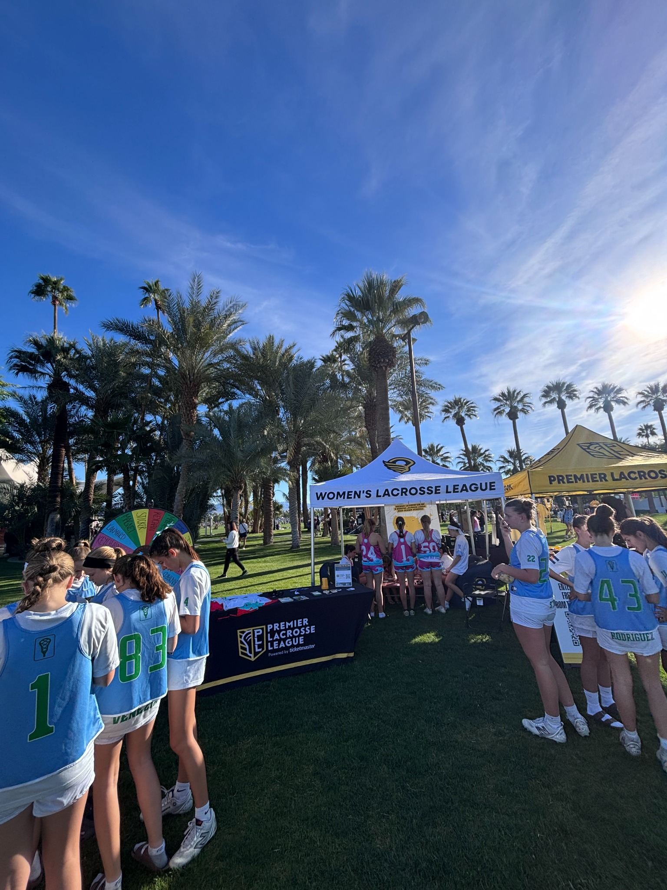
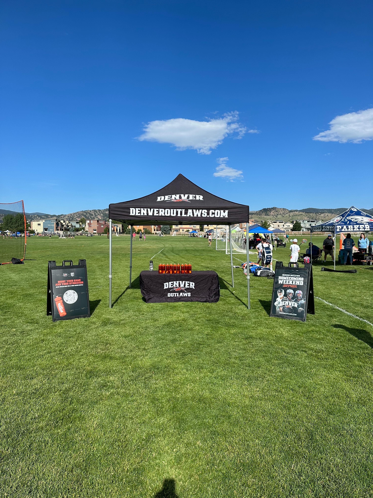
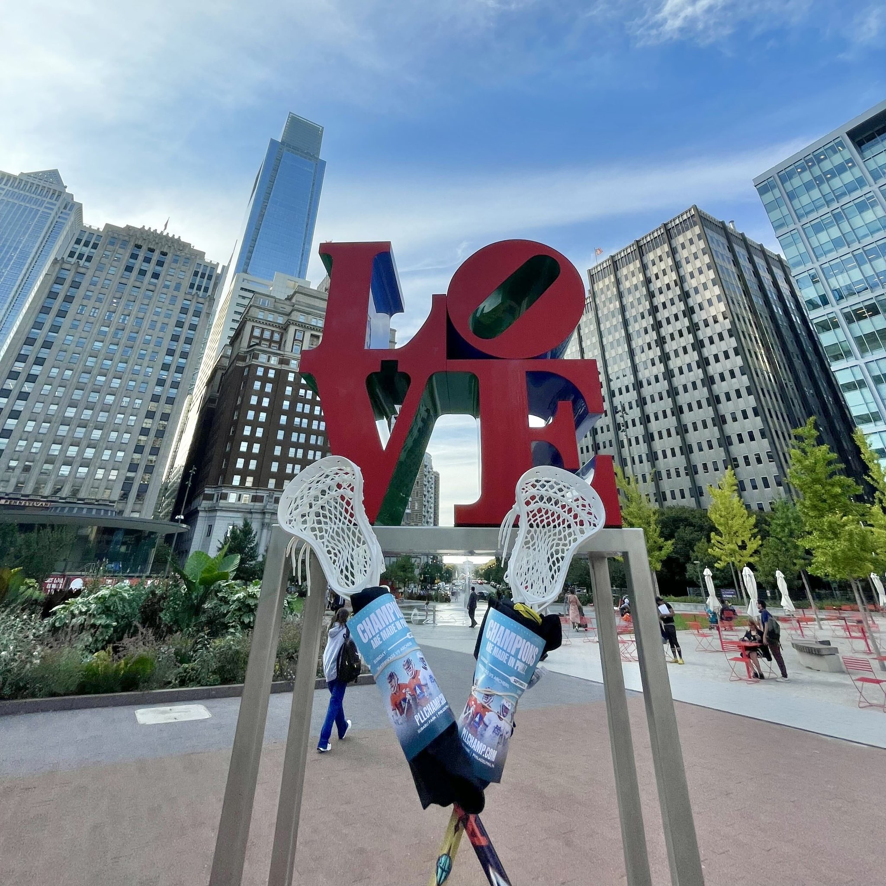
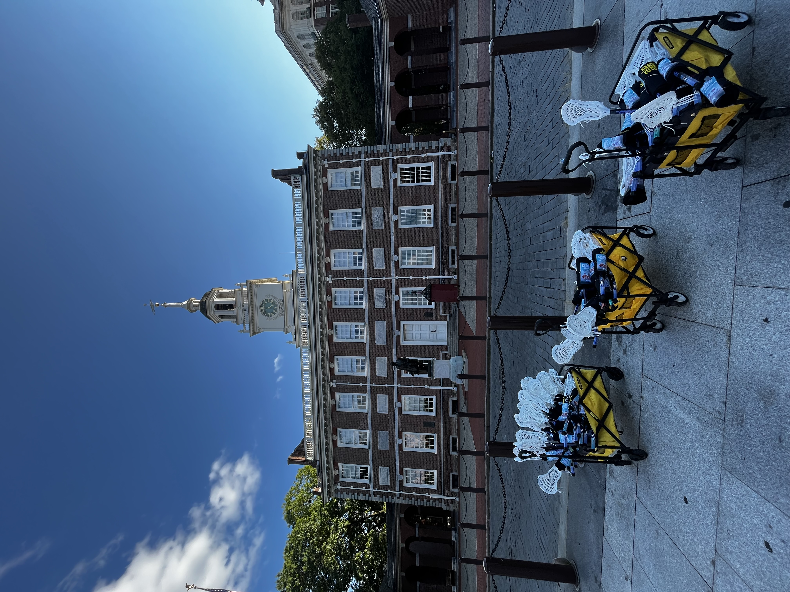
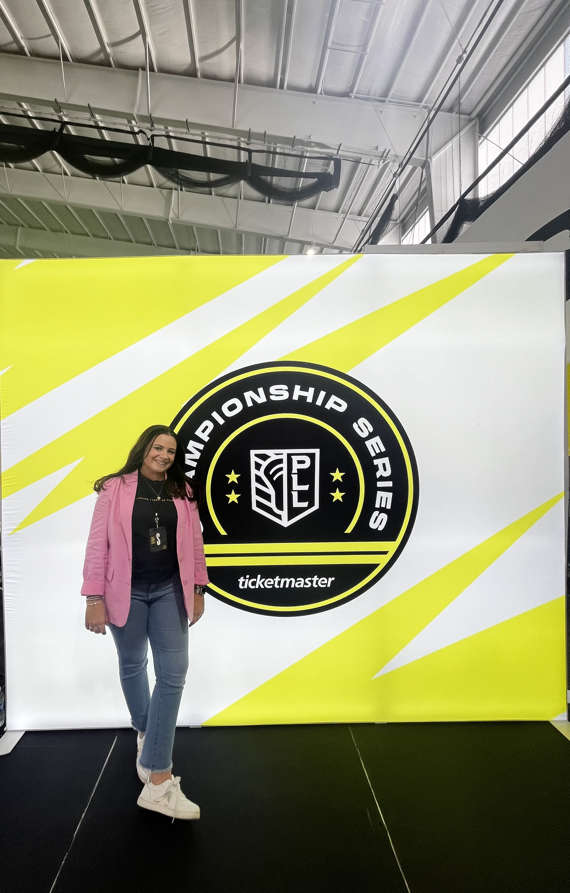
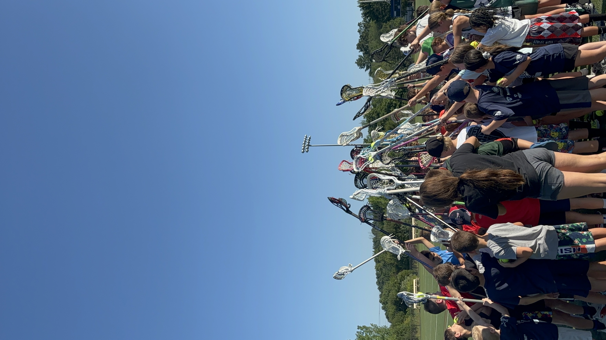

In the Field











Growing up with two entrepreneurial parents, I saw firsthand the hard work, resilience, and persistence it takes to turn an idea into something real. That mindset has shaped how I approach my own career. I love taking ownership, figuring things out, and building something from the ground up.
While studying at Marist University, I found myself drawn to the intersection of marketing, community, and live experiences. That interest led to opportunities like serving as an HBO Campus Brand Manager, where I learned how powerful it can be when people feel genuinely connected to a brand, an experience, or a community.
Since then, I've built my career around creating those connections. Whether it's launching a new program, growing an ambassador network, activating a new market, or bringing people together around a shared passion, I'm energized by turning ideas into something people actually want to be part of.
The work I'm most proud of isn't just the campaigns, events, or programs themselves. It's the systems, communities, and experiences behind them. I love building things that continue to grow long after they're launched.
As the PLL expanded into homecoming markets, we needed a way to create a consistent grassroots presence beyond game weekends. We had passionate fans across the country, but no formal structure to activate them locally, build community, or extend our marketing efforts.
I helped create and scale the league's first national ambassador program, focused on empowering passionate fans, students, and community members to serve as local representatives who could drive awareness, support grassroots initiatives, generate leads, and create meaningful connections within their communities.
I recruited, onboarded, trained, and managed ambassadors across more than 10 markets while developing the playbooks, communication systems, reporting processes, and activation strategies that enabled consistent execution nationwide. Ambassadors supported events, community engagement, lead generation, and local market initiatives throughout the season.
What started as a new initiative became a foundational part of the league's grassroots strategy. The program created scalable local market presence, expanded community engagement efforts, and generated measurable business impact through lead generation and fan acquisition.
As the PLL expanded into homecoming markets, one of the biggest challenges was creating local relevance ahead of each market weekend. The league operated nationally, but fans connect locally. We needed to introduce the PLL to new audiences and create excitement leading into game weekends.
I helped develop and execute a localized grassroots marketing framework designed to connect professional lacrosse with communities through athlete appearances, school visits, community events, local partnerships, earned media opportunities, and social storytelling to make each market weekend feel like a local event rather than a traveling sports property.
Working across multiple markets, I coordinated and executed community-focused activations that brought players, teams, and the league directly into local communities through youth clinics, school visits, hospital appearances, media opportunities, community partnerships, and fan engagement events designed to build awareness and create meaningful local connections before game weekend.
By combining community engagement, earned media, and social amplification, these efforts helped increase awareness, expand reach, and strengthen connections between the league and local communities ahead of market weekends.
PLL fans were passionate about the league, but many experienced that fandom in isolation. Outside of game weekends, there were limited opportunities for supporters to connect with one another, build relationships, or engage with the league at a local level.
I helped develop a supporter group model focused on creating community-driven experiences that brought fans together throughout the season, turning casual supporters into engaged advocates by creating opportunities for connection, conversation, and shared experiences within their local markets.
Working alongside supporter leaders and engaged fans, I helped launch and grow supporter communities across multiple markets. Programming included watch parties, community events, local meetups, exclusive experiences, and ongoing communication designed to keep fans engaged between game weekends.
The program transformed individual fans into connected communities of advocates who actively promoted the league, welcomed new supporters, and helped strengthen the PLL's presence within their local markets.






Field marketing professional with 4+ years of experience executing ambassador programs, community initiatives, and experiential activations across 10+ U.S. markets. Proven track record managing cross-functional partnerships, coordinating large-scale events, and driving measurable results, including 40,000+ consumer leads and 200% year-over-year activation growth.
When I'm not working, I'm usually exploring Nashville with my boyfriend, planning a trip that's still months away, or finding another project to tackle around our condo. I'm always looking for hidden gems, whether that's a local restaurant, a neighborhood event, or a spot most people drive right past.
At home, you'll find me hanging out with Guy, my cat and frequent work-from-home companion, or getting completely invested in a docuseries I'll inevitably finish in one weekend.
I'm open to Field Marketing Manager, Experiential Marketing, Community Marketing, and Growth Marketing roles. If you're building something people will love, let's talk.